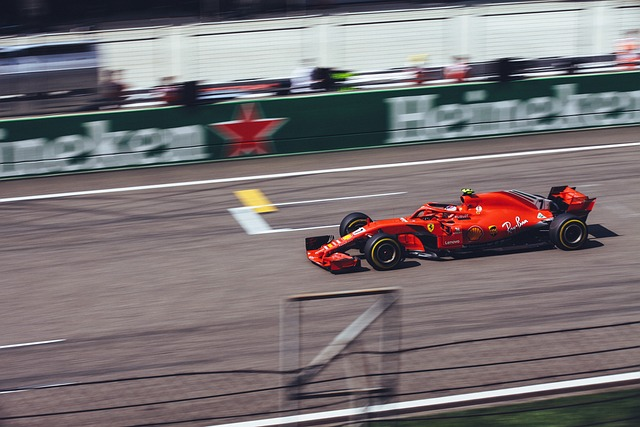

O Laboratório Veloz da Tecnologia
Postado 07 maio de 2024

Nas pistas de corrida da Fórmula 1, a velocidade não é apenas uma questão de adrenalina e
competição. É também um campo de testes para tecnologias de ponta que impulsionam inovações em
todo o mundo. Neste título, exploramos como a F1 se tornou um laboratório veloz para avanços
tecnológicos, desde carros ultrarrápidos até simulações computacionais e comunicação em tempo
real.
A tecnologia e a Fórmula 1 (F1) estão intrinsecamente ligadas, impulsionando inovações e avanços
tanto nas pistas quanto no mundo real. Aqui estão alguns pontos de conexão entre esses dois
campos:
Carros de F1 como laboratórios de tecnologia: Os carros de F1 são verdadeiros laboratórios de
alta velocidade. Eles incorporam tecnologias avançadas, como sistemas de recuperação de energia
(ERS), aerodinâmica sofisticada e materiais ultraleves. Essas inovações eventualmente encontram
aplicação em veículos de rua, melhorando a eficiência e a segurança.
Simulações e análise de dados: A F1 utiliza simulações computacionais e análise de dados para
otimizar o desempenho dos carros. Essas mesmas técnicas são aplicadas em outras áreas, como
previsão do tempo, modelagem climática e até mesmo na medicina.
Comunicação e transmissão ao vivo: A F1 é pioneira na transmissão ao vivo de corridas e
comunicação entre equipes e pilotos. Essas tecnologias também são usadas em eventos esportivos,
notícias e até mesmo videochamadas cotidianas.
Desenvolvimento de materiais e segurança: A busca por materiais mais leves e resistentes na F1
influencia a indústria automobilística e aeroespacial. Além disso, os avanços em segurança, como
os sistemas de proteção de cabeça (HANS), têm origem nas corridas de F1.
Em resumo, a F1 é um campo de testes e catalisador para a tecnologia, e suas inovações
reverberam em muitos aspectos da nossa vida cotidiana.
Encontrando Equilíbrio na Era Digital
Postado 07 maio de 2024
Nossas vidas estão cada vez mais interconectadas, e a imagem captura essa realidade. As mãos
segurando o smartphone e tocando a tela refletem nossa constante conexão com o mundo digital. Ao
mesmo tempo, o laptop aberto sugere trabalho ou estudo. As chaves do carro ao lado indicam que
estamos sempre em movimento.
No entanto, essa conectividade também traz desafios. Como equilibrar trabalho e vida pessoal?
Como evitar a sobrecarga de informações? O segredo está em definir limites, priorizar tarefas e
desconectar quando necessário. Afinal, a verdadeira eficiência não está em fazer tudo ao mesmo
tempo, mas em fazer o que realmente importa.
Em um blog, podemos explorar dicas para gerenciar essa conectividade, como usar aplicativos de
produtividade, estabelecer horários de trabalho e lazer, e cultivar momentos offline. Afinal, a
tecnologia é uma ferramenta poderosa, mas cabe a nós usá-la com sabedoria.

A Magia dos Teclados Iluminados
Postado 07 maio de 2024
Na Era Digital, nossa principal forma de comunicação mudou do papel e caneta para as teclas e
telas. A sensação tátil dos dedos pressionando as teclas iluminadas tornou-se tão familiar
quanto a pegada de uma caneta desgastada. Nesta exploração das ferramentas modernas de
digitação, consideremos como elas moldam nossas interações com a tecnologia.
Imagine-se em um quarto com pouca luz; sua única fonte de iluminação é o brilho suave que emana
do seu teclado. Cada letra que você digita lança uma luminosidade suave que guia seus
pensamentos para a página digital. Isso não se trata apenas de inserir dados; é sobre como esses
caracteres iluminados são companheiros em nossas jornadas noturnas em busca de criatividade e
conexão.
A evolução do design dos teclados foi marcada tanto pelo apelo estético quanto pelo
aprimoramento funcional. Os teclados retroiluminados não apenas servem a propósitos práticos em
condições de pouca luz, mas também adicionam um elemento de estilo às nossas estações de
trabalho. Eles transformam tarefas mundanas em experiências que envolvem nossos sentidos além do
simples toque.
Considere as teclas 'G' e 'H' no centro deste teclado - elas são mais do que letras; representam
portais para possibilidades infinitas no ciberespaço. Seja escrevendo um artigo, codificando
software ou comandando mundos virtuais em jogos, essas teclas são atores centrais na tradução do
pensamento humano para a realidade digital.
Mas o que essa ênfase nas ferramentas de digitação iluminadas diz sobre nós como usuários?
Reflete nosso desejo de conforto e eficiência combinado com uma apreciação pela beleza no design
- uma reflexão não apenas vista, mas sentida sob as pontas dos dedos toda vez que nos sentamos
para trabalhar ou brincar.
Ao concluirmos essa reflexão sobre os teclados retroiluminados como instrumentos funcionais e
objetos estéticos em nosso cenário tecnológico, abracemos seu papel em iluminar nossos caminhos
pelo ciberespaço - uma tecla de cada vez.